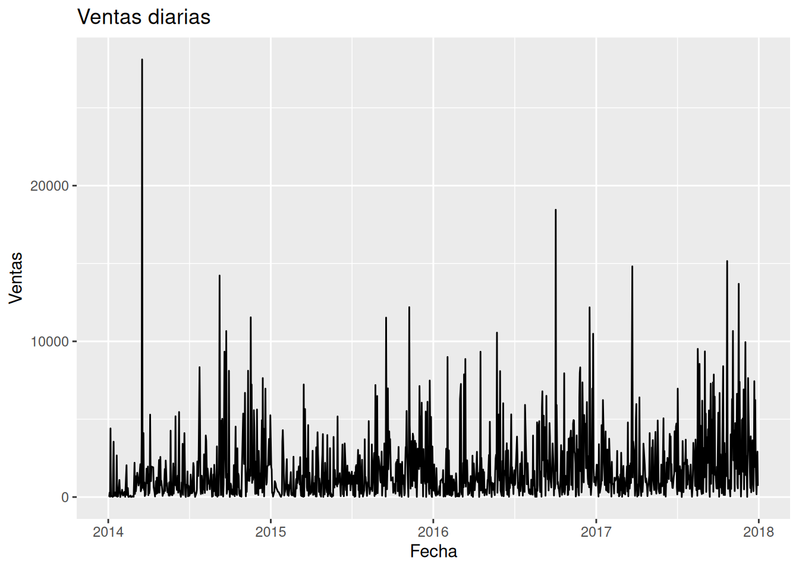
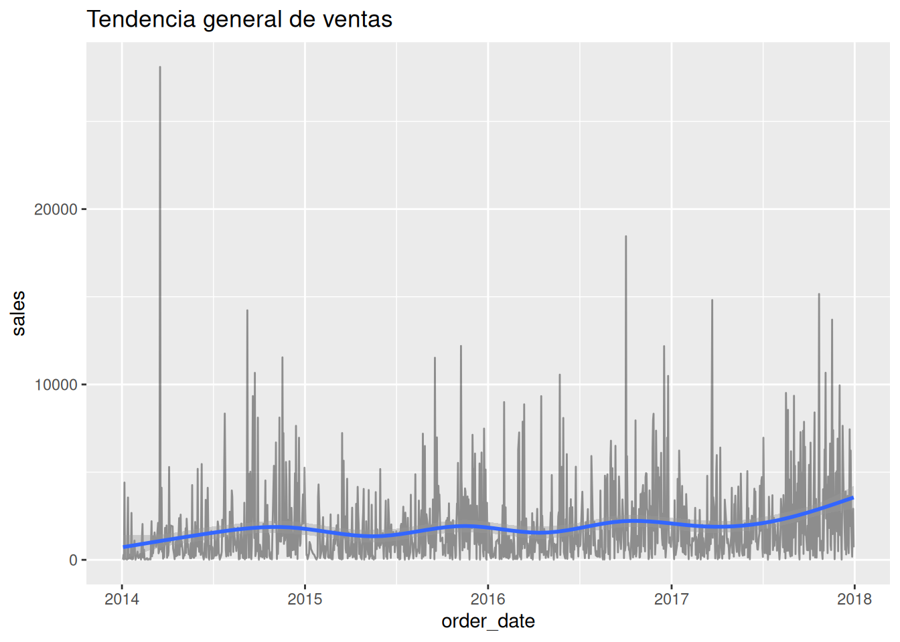
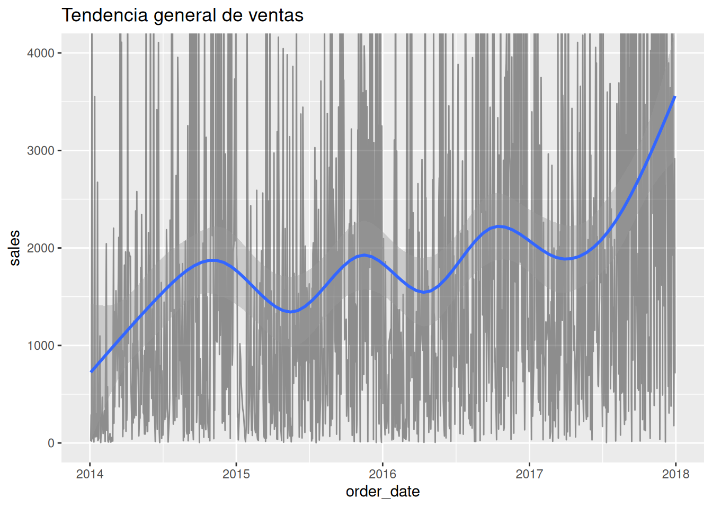
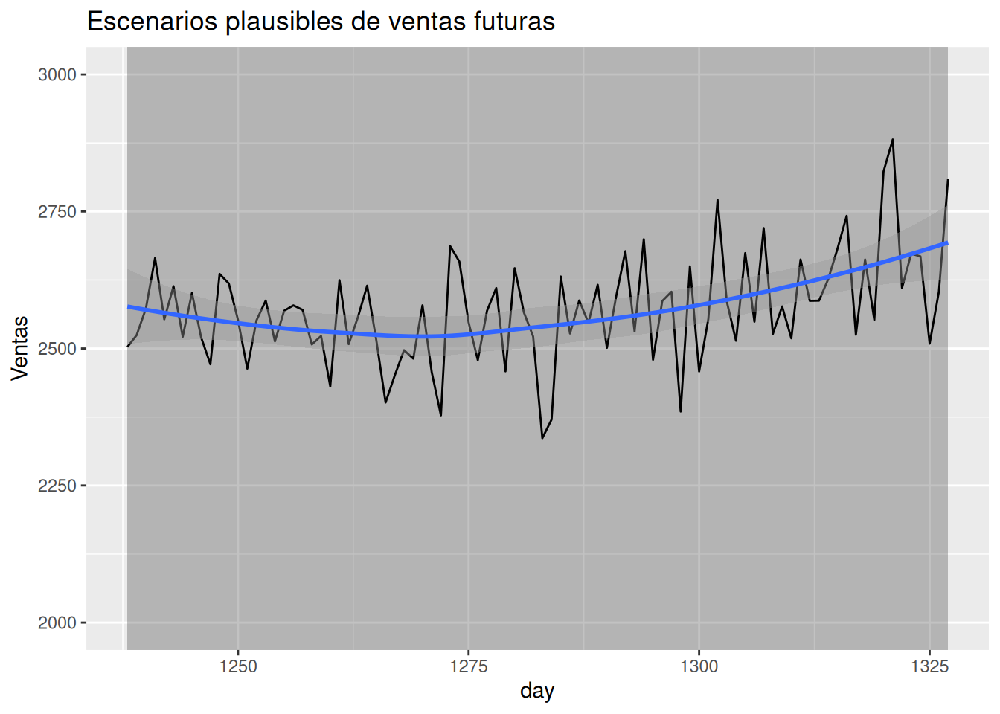

# Agregar la variable de fecha de orden, con formato de fecha; basado
# en la variable existente
superstore <- superstore %>%
mutate(
order_date = as.Date(
`Order Date`,
format = "%m/%d/%Y"
)
)
#glimpse(superstore) # produce:14.- Forecasting para humanos normales
Introducción
Todos pensamos sobre el futuro.
Lo hacemos constantemente.
Antes de salir de casa miramos el clima para decidir si llevar paraguas.
Antes de hacer un viaje estimamos cuánto tráfico podría haber.
Antes de organizar una reunión pensamos cuántas personas podrían asistir.
Las empresas hacen exactamente lo mismo, pero a mayor escala.
Intentan responder preguntas como:
- ¿cuánto venderemos el próximo mes?
- ¿necesitaremos más inventario?
- ¿debemos contratar más personal?
- ¿alcanzaremos nuestros objetivos de ventas?
Nadie conoce el futuro con certeza.
Sin embargo, esperar a que el futuro llegue para tomar decisiones suele ser una mala estrategia.
Necesitamos planificar incluso cuando existe incertidumbre.
Aquí aparece una de las ideas centrales de este libro:
Tomar decisiones bajo incertidumbre no significa eliminar la incertidumbre.
Significa aprender a convivir con ella.
El forecasting es una herramienta que nos ayuda precisamente a eso.
No intenta adivinar el futuro.
Intenta describir escenarios plausibles sobre lo que podría ocurrir.
¿Por qué las empresas intentan anticipar el futuro?
Antes de hablar de modelos y gráficos, vale la pena entender el problema de negocio.
Imaginemos una tienda que vende computadoras.
Si espera vender 100 equipos el próximo mes, necesitará cierto nivel de inventario.
Si espera vender 1.000 equipos, necesitará mucho más.
La diferencia entre ambas situaciones puede significar:
- exceso de inventario
- productos agotados
- costos innecesarios
- oportunidades perdidas
Por eso las empresas intentan anticipar la demanda futura.
No porque crean que pueden predecir perfectamente el futuro.
Sino porque incluso una estimación imperfecta suele ser mejor que no tener ninguna estimación.
¿Qué es forecasting?
En lenguaje sencillo:
Forecasting es el proceso de explorar escenarios plausibles sobre el futuro utilizando información disponible en el presente.
La palabra forecast suele traducirse como:
- pronóstico
- previsión
- estimación futura
Pero ninguna de estas traducciones captura completamente la idea.
Forecasting no es una profecía.
Tampoco es una garantía.
Es una herramienta para pensar.
Adivinar vs estimar plausibilidades
Existe una diferencia importante entre estas dos afirmaciones:
Adivinar
Las ventas del próximo mes serán exactamente $52.734.
Forecasting probabilístico
Las ventas del próximo mes probablemente estarán entre $48.000 y $58.000.
La segunda afirmación es mucho más útil.
Reconoce explícitamente la incertidumbre.
Y justamente esa incertidumbre es la esencia del pensamiento bayesiano.
Tendencias: señales imperfectas del futuro
Cuando observamos datos a lo largo del tiempo solemos buscar patrones.
Uno de los más importantes es la tendencia.
Una tendencia representa una dirección general.
Puede ser:
- creciente
- decreciente
- relativamente estable
Por ejemplo:
- aumento gradual de ventas
- disminución de clientes
- crecimiento sostenido de ingresos
Sin embargo, las tendencias reales rara vez son líneas perfectas.
Los datos contienen ruido.
Eventos inesperados ocurren constantemente.
Por eso debemos pensar en las tendencias como señales aproximadas, no como reglas absolutas.
Explorando las ventas a lo largo del tiempo
Trabajaremos con el dataset Superstore.
Primero cargamos los datos y preparamos la variable de fecha.
Ahora agregamos las ventas por día.
# Agrupar por fecha de orden
sales_daily <- superstore %>%
group_by(order_date) %>%
summarise(
sales = sum(Sales),
.groups = "drop"
)
sales_daily[1:6,] # produce:# A tibble: 6 × 2
order_date sales
<date> <dbl>
1 2014-01-03 16.4
2 2014-01-04 288.
3 2014-01-05 19.5
4 2014-01-06 4407.
5 2014-01-07 87.2
6 2014-01-09 40.5Visualizando la evolución temporal
# Visualizar la evolución temporal de las ventas
ggplot(
sales_daily,
aes(
x = order_date,
y = sales
)
) +
geom_line() +
#coord_cartesian(ylim = c(0, 30000)) +
labs(
title = "Ventas diarias",
x = "Fecha",
y = "Ventas"
)
Interpretación
Este gráfico suele producir una reacción interesante.
Muchos lectores esperan observar una línea suave.
En realidad suelen encontrar:
- picos
- caídas
- ruido
- fluctuaciones constantes
Eso es normal.
Los negocios reales son desordenados.
La incertidumbre forma parte del sistema.
Suavizando el ruido
A veces es útil observar la tendencia general.
Podemos usar una curva suavizada.
# Graficar la tendencia de las ventas a lo largo del tiempo
ggplot(
sales_daily,
aes(
x = order_date,
y = sales
)
) +
geom_line(alpha = 0.4) +
geom_smooth(se = TRUE) +
labs(
title = "Tendencia general de ventas"
)
# Graficar la tendencia de las ventas a lo largo del tiempo con zoom
# en el eje Y
ggplot(
sales_daily,
aes(
x = order_date,
y = sales
)
) +
geom_line(alpha = 0.4) +
geom_smooth(se = TRUE) +
coord_cartesian(ylim = c(0, 4000)) +
labs(
title = "Tendencia general de ventas"
)
¿Qué representa la banda sombreada?
La banda alrededor de la curva refleja incertidumbre.
No debemos interpretarla como:
"Aquí estará exactamente el futuro."
Más bien significa:
"Dado lo observado, estas trayectorias parecen razonablemente compatibles con los datos."
Observa cómo la incertidumbre aparece de forma natural incluso antes de construir un modelo de forecasting formal.
El futuro es más incierto que el pasado
Esta es probablemente la idea más importante del capítulo.
El pasado ya ocurrió.
El futuro no.
Por lo tanto:
La incertidumbre suele aumentar conforme intentamos mirar más lejos.
Una predicción para mañana suele ser más confiable que una predicción para dentro de dos años.
No porque el modelo sea malo.
Sino porque el mundo es incierto.
Un modelo simple para pensar sobre el futuro
No necesitamos un modelo sofisticado para introducir forecasting.
Podemos comenzar con una regresión lineal bayesiana.
La idea es sencilla:
- tiempo como predictor
- ventas como respuesta
# Crear una variable con el número de días de ventas ordenado
sales_daily <- sales_daily %>%
mutate(
day = row_number()
)
# Imprimir 6 filas de las 1237
sales_daily[1:6,] # produce:# A tibble: 6 × 3
order_date sales day
<date> <dbl> <int>
1 2014-01-03 16.4 1
2 2014-01-04 288. 2
3 2014-01-05 19.5 3
4 2014-01-06 4407. 4
5 2014-01-07 87.2 5
6 2014-01-09 40.5 6# Resumir la variable day
summary(sales_daily$day) # produce: Min. 1st Qu. Median Mean 3rd Qu. Max.
1 310 619 619 928 1237 # Modelo para predecir las ventas (como respuesta) según el tiempo
# (como predictor)
model_forecast <- stan_glm(
sales ~ day,
data = sales_daily,
family = gaussian(),
chains = 2,
iter = 1000,
refresh = 0
)
posterior_interval(model_forecast) # produce: 5% 95%
(Intercept) 959.5214695 1398.051954
day 0.7881046 1.397143
sigma 2196.5535585 2345.721584Construyendo fechas futuras
# Construir una tabla con 90 días posteriores al último día de
# ventas del modelo (con la tabla original)
future_days <- tibble(
day = seq(
max(sales_daily$day) + 1,
max(sales_daily$day) + 90
)
)
# Imprimir 6 de los 90 días del futuro
future_days[1:6,] # produce:# A tibble: 6 × 1
day
<int>
1 1238
2 1239
3 1240
4 1241
5 1242
6 1243Simulando escenarios plausibles
# Simular escenarios plausibles
future_draws <- posterior_predict(
model_forecast,
newdata = future_days
)
# Imprimir las 6 simulaciones posteriores (de las 1000 filas)
# para cada uno de los 90 días (90 columnas)
future_draws[1:6, 1:5] # produce: 1 2 3 4 5
[1,] 3075.964 5224.4627 3557.5512 3873.3698 581.6925
[2,] 6625.594 2751.1320 -914.5703 -416.9102 2216.0417
[3,] 4399.627 5483.9313 4879.8371 2259.3602 4749.7331
[4,] 3559.997 3441.6409 6568.6279 3158.4849 2955.0038
[5,] 1453.031 -151.0031 3978.4246 6795.4297 6516.4152
[6,] 6362.650 2562.6793 140.7697 4531.3884 1081.1995Aquí ocurre algo importante.
No obtenemos una única predicción.
Obtenemos muchas simulaciones posibles.
Justamente eso refleja la filosofía bayesiana:
El futuro no es un punto.
El futuro es una distribución.
Resumen de escenarios plausibles
# Resumir los escenarios plausibles del futuro (los 90 días del
# futuro)
forecast_summary <- tibble(
day = future_days$day,
median = apply(
future_draws,
2,
median
),
low = apply(
future_draws,
2,
quantile,
probs = 0.10
),
high = apply(
future_draws,
2,
quantile,
probs = 0.90
)
)
# Imprimir 6 filas de las 90 (90 días)
forecast_summary # produce:# A tibble: 90 × 4
day median low high
<int> <dbl> <dbl> <dbl>
1 1238 2503. -427. 5497.
2 1239 2524. -390. 5615.
3 1240 2573. -509. 5311.
4 1241 2665. -203. 5520.
5 1242 2553. -317. 5639.
6 1243 2614. -458. 5508.
7 1244 2522. -282. 5573.
8 1245 2601. -342. 5450.
9 1246 2520. -365. 5578.
10 1247 2471. -212. 5439.
# ℹ 80 more rowsVisualizando incertidumbre futura
# Visualizar los escenarios plausibles de ventas futuras
ggplot(
forecast_summary,
aes(
x = day,
y = median
)
) +
geom_ribbon(
aes(
ymin = low,
ymax = high
),
alpha = 0.3
) +
geom_line() +
labs(
title = "Escenarios plausibles de ventas futuras",
y = "Ventas"
)
# Visualizar los escenarios plausibles de ventas futuras, con zoom
# en el eje Y
ggplot(
forecast_summary,
aes(
x = day,
y = median
)
) +
geom_ribbon(
aes(
ymin = low,
ymax = high
),
alpha = 0.3
) +
geom_line() +
geom_smooth(se = TRUE) +
coord_cartesian(ylim = c(2000, 3000)) +
labs(
title = "Escenarios plausibles de ventas futuras",
y = "Ventas"
)
Cómo interpretar este gráfico
Un error común sería decir:
Las ventas serán exactamente esta línea.
Eso es incorrecto.
La interpretación correcta es:
La línea representa un escenario central plausible.
Y:
La banda representa otros escenarios razonablemente compatibles con la información disponible.
La banda suele ampliarse hacia el futuro.
Eso es una característica deseable.
Está mostrando honestamente nuestra incertidumbre.
Forecasting probabilístico
En muchos contextos empresariales la pregunta correcta no es:
¿Cuál será exactamente el resultado?
Sino:
¿Qué rango de resultados parece razonablemente plausible?
Esa diferencia cambia completamente la forma de tomar decisiones.
¿Por qué esto es útil para los negocios?
Imaginemos tres escenarios para el próximo trimestre:
- conservador
- esperado
- optimista
Con ellos una empresa puede:
- planificar inventario
- definir presupuestos
- contratar personal
- gestionar riesgos
Sin necesidad de creer que alguna predicción será perfecta.
Un modelo simple puede ser suficiente
Existe una tentación frecuente en analytics.
Pensar que modelos más complejos siempre producen mejores decisiones.
No necesariamente.
Muchas veces:
- un modelo simple
- comprensible
- transparente
resulta más útil que un modelo extremadamente sofisticado.
Especialmente cuando las decisiones deben explicarse a otras personas.
Reflexión bayesiana
Los capítulos anteriores nos enseñaron que:
- la incertidumbre es inevitable
- las probabilidades representan plausibilidad
- los modelos ayudan a actualizar creencias
Forecasting es simplemente una extensión natural de esas mismas ideas.
En lugar de preguntarnos:
¿Qué creemos sobre un cliente?
Ahora preguntamos:
¿Qué creemos sobre el futuro?
La lógica es la misma.
Trabajamos con incertidumbre.
Actualizamos creencias.
Construimos escenarios plausibles.
Y tomamos decisiones más informadas.
Ejercicios
Ejercicio 1
Grafica las ventas semanales en lugar de las ventas diarias.
¿Qué diferencias observas en la variabilidad?
Ejercicio 2
Construye una curva suavizada utilizando distintos valores de suavización.
¿Cómo cambia tu percepción de la tendencia?
Ejercicio 3
Extiende el horizonte de forecasting a:
- 30 días
- 90 días
- 180 días
¿Cómo cambia la incertidumbre?
Ejercicio 4
Interpreta la banda plausible del gráfico.
¿Por qué sería incorrecto afirmar que todas las ventas futuras caerán exactamente dentro de ella?
Ejercicio 5
Reflexiona sobre una decisión empresarial que podría beneficiarse de trabajar con rangos plausibles en lugar de predicciones puntuales.